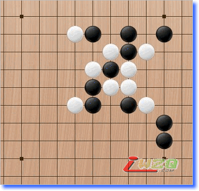
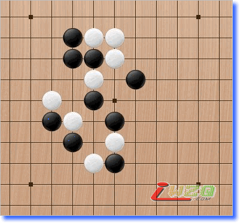
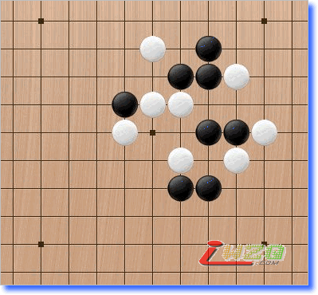
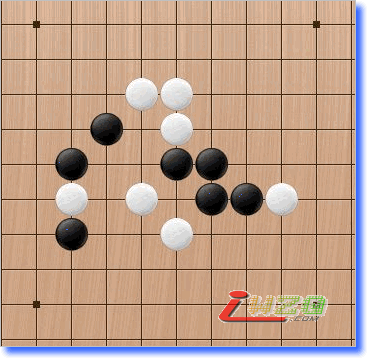

五子剑系列讲座之十一【五子棋中级习题】
#1 五子剑系列讲座之十一【五子棋中级习题】 作者：有志青年 发表时间：2007-12-27 18:52:38
注：五子剑五子棋系列讲座教程出自掌棋盟论坛，版权归原作者本人及掌棋盟论坛所有，未经许可，请勿私自转载。爱五子棋网站已获授权。
下棋这几年，飘飘零零的真正踏实在下棋的时间并不多，利用空闲的几天写下个人的一些经
验，希望可以对棋友有所帮助！
我认为下棋最重要的是态度和方法，你对五子棋的热爱程度以及学棋时所用的方法是提高
的关键！
阅读的顺序为：
五子棋初级→五子棋初级花月→五子棋初级蒲月→五子棋初级习题→
五子棋中级→五子棋中级云雨月→五子棋中级寒星→五子棋中级银月→五子棋中级习题→
五子棋ＶＣＦ习题集→五子棋高级
所有截图画面是ＬＩＢ、五子妙手３.０、ＱＱ游戏五子棋单机版能有如此多的人爱好
五子棋是最令人高兴的事，如此多的人为了同一种游戏来交流甚至痴迷！
感谢所有下五子棋的朋友，祝大家笑口常开、一生平安！
棋友：五子剑
#2 五子棋中级习题-1 作者：有志青年 发表时间：2007-12-27 18:54:16
因为中级习题可能做起来相对比初级难一些，所以这里一次只发三道题，以便做题时可以安心慢慢想！
一、黑先，如何胜？
二、黑先，如何胜？
三、黑先，如何胜？
#3 五子棋中级习题-2 作者：有志青年 发表时间：2007-12-27 18:56:23
一、黑先，如何胜？
二、白先，如何利用黑禁手胜？
三、白先，如何胜？

#4 五子棋中级习题-3 作者：有志青年 发表时间：2007-12-27 19:01:57
一、白先，如何胜？

二、白先，如何胜？
三、黑先，如何胜？
#5 五子棋中级习题-4 作者：有志青年 发表时间：2007-12-27 19:12:10
一、白先，如何胜？
二、黑先，如何胜？
三、黑先，如何胜？
#6 五子棋中级习题-5 作者：有志青年 发表时间：2007-12-27 19:14:57
一、黑先，如何胜？
二、黑先，如何胜？

三、黑先，如何胜？
#7 五子棋中级习题-6 作者：有志青年 发表时间：2007-12-27 19:17:08
一、黑先，如何胜？
二、黑先，如何胜？
三、黑先，如何胜？
#8 五子棋中级习题-7 作者：有志青年 发表时间：2007-12-27 19:19:05
一、黑先，如何胜？
二、黑先，如何胜？
三、黑先，如何胜？
#9 五子棋中级习题-8 作者：有志青年 发表时间：2007-12-27 19:22:39
一、黑先，如何胜？
二、黑先，如何胜？
三、黑先，如何胜？
#10 Re:五子剑系列讲座之十一【五子棋中级习题】 作者：寒江独钓雪 发表时间：2008-9-5 17:43:08
=======上图对应的爱五子棋谱代码如下，以便你拆解：========
h8g9i7h9f9f8e7i10g7h10h7f7g8i6e8e6i11j10g10h11j9f6g6f5f4g4d7c6k10i8j7k7d5d6b6k4k5l6j6l4j8j5l5i4
======================================================
习题-1第一题作业，第二题很难，总有反冲的，晕。
#11 Re:五子剑系列讲座之十一【五子棋中级习题】 作者：寒江独钓雪 发表时间：2008-9-5 17:54:19
上面发错了，以下是习题-1第一题作业，1-16手为习题形状。有没有其他答案参考。
=======上图对应的爱五子棋谱代码如下，以便你拆解：========
h8g9h7g8g6f9e9e8f8h6i8j9j8j10k7i7k6k8h10i9h9h11j7
======================================================
#12 Re:五子剑系列讲座之十一【五子棋中级习题】 作者：寒江独钓雪 发表时间：2008-9-5 22:18:00
习题-1第二题作业
=======上图对应的爱五子棋谱代码如下，以便你拆解：========
i8h7i7i6i5j4g9j9k10j10k8k11k7l6l7l8m9l9k6k9m7j7j5m8k5k4l5
======================================================
#13 Re:五子剑系列讲座之十一【五子棋中级习题】 作者：寒江独钓雪 发表时间：2008-9-5 23:13:35
习题-2第一题作业
=======上图对应的爱五子棋谱代码如下，以便你拆解：========
i9i8j9i10j8j10h10g11k7l6i11j11k11m9j6j7i7h6h5i5h9g9k9l9k8k10k5k6l4
======================================================
#14 Re:五子剑系列讲座之十一【五子棋中级习题】 作者：ldh710 发表时间：2008-9-20 19:38:33
1-2的答案错了吧..白22手活3了..之后白43胜#15 Re:五子剑系列讲座之十一【五子棋中级习题】 作者：学棋的我 发表时间：2008-12-24 19:35:55
没答案吗
#16 Re:五子剑系列讲座之十一【五子棋中级习题】 作者：无解 发表时间：2009-2-12 23:11:01
恩 ~~很好！需要大家看仔细了啊
#17 Re:五子剑系列讲座之十一【五子棋中级习题】 作者：hzhzh 发表时间：2009-3-5 17:20:23
1-2
=======上图对应的爱五子棋谱代码如下，以便你拆解：========
h8g7h7h6h5i4f9i9j10i10j8j11j7k6k7k8l9k9i8i6l6
======================================================
#18 Re:五子剑系列讲座之十一【五子棋中级习题】 作者：hzhzh 发表时间：2009-3-5 17:32:37
1-3
=======上图对应的爱五子棋谱代码如下，以便你拆解：========
i9h9i8h10i7i6k9g8k8j8k11k10l11l9l8l7j7j6g7h7i11
======================================================
#19 Re:五子剑系列讲座之十一【五子棋中级习题】 作者：hzhzh 发表时间：2009-3-5 17:41:41
2-1
=======上图对应的爱五子棋谱代码如下，以便你拆解：========
i8i7i6j6j7h5k6l5j5i4h4m8h9g10i10j10k10j9j8i9h8k8l3h7g8
======================================================
#20 Re:五子剑系列讲座之十一【五子棋中级习题】 作者：斐 发表时间：2009-11-27 20:37:27
中级题应该都算有禁吧？
你走无禁有什么意思呀？
#21 Re:五子棋中级习题-2 作者：山海棠 发表时间：2010-5-21 19:28:20
五子棋中级习题-2
一、黑先，如何胜？
=======上图对应的爱五子棋谱代码如下，以便你拆解：========
i9i8i7i10j9j7j8j10h10j11i11g11k11h6k7l6j6i5j12g9k9l9l10
======================================================
#22 Re:五子棋中级习题-1 作者：山海棠 发表时间：2010-5-21 19:36:46
五子棋中级习题-1
一、黑先
=======上图对应的爱五子棋谱代码如下，以便你拆解：========
h8g8f8e8e9f9i8g9j8i7h7h6g6j9k7j10k6k8h9j7h10h11
======================================================
j9,g8双成四
=======上图对应的爱五子棋谱代码如下，以便你拆解：========
i8h7g9j9i7i6i5j4k8l8k7j10l7l9k10k11m9l6j8
======================================================
#23 Re:五子棋中级习题-2 作者：山海棠 发表时间：2010-5-21 19:46:53
五子棋中级习题-2
二、白先
h9禁手
=======上图对应的爱五子棋谱代码如下，以便你拆解：========
h8i8g10i7g6f7i9j7j9j10j8h11i5g5k5j5l5g8h7i10
======================================================
#24 Re:五子剑系列讲座之十一【五子棋中级习题】 作者：山海棠 发表时间：2010-5-21 19:52:24
五子棋中级习题-2
三、白先
=======上图对应的爱五子棋谱代码如下，以便你拆解：========
h8h9i9i10j10g7j11i8j7j9h7k10l11j8h11g11l5k6l4k8k9l7m6m8l8
======================================================
中级习题-1第三题希望能得到解答
#25 Re:五子棋中级习题-6 作者：山海棠 发表时间：2010-5-21 20:49:45
五子棋中级习题-3
一、白先
f9禁手，黑负
=======上图对应的爱五子棋谱代码如下，以便你拆解：========
g8g9g10h10f10g11f11h11i9h6h7f7e7e8f6g5h5d9c10e9h9c9
======================================================
#26 Re:五子棋中级习题-1 作者：山海棠 发表时间：2010-5-22 9:27:41
五子棋中级习题-1
三、黑先
仍然不会。。。
［此帖子已被 山海棠 在 2010-5-22 10:33:38 编辑过］
#27 Re:Re:五子棋中级习题-1 作者：山海棠 发表时间：2010-5-22 10:21:39
五子棋中级习题-3
二、白先
=======上图对应的爱五子棋谱代码如下，以便你拆解：========
g8h8i9i8j7i7h6j8k8k9j10j9i10j11k11k6k5l9k10l10m11l7l8n9m9m8
======================================================
#28 Re:五子棋中级习题-3 作者：山海棠 发表时间：2010-5-22 10:24:27
五子棋中级习题-3
三、黑先
=======上图对应的爱五子棋谱代码如下，以便你拆解：========
h8g8g9f8f10e11g7f7f9g6h10g10g11e7j8i9h5i6h9h11e9
======================================================
#29 Re:五子棋中级习题-4 作者：山海棠 发表时间：2010-5-22 19:07:52
五子棋中级习题-4一、白先
利用禁手取胜（三三、四四及长连禁手）
=======上图对应的爱五子棋谱代码如下，以便你拆解：========
i9h9g9g10i10i8j7k7g11j10j11k9k11l11k10e12f11h12i11i12
======================================================
以下为拆解
1、利用长连
=======上图对应的爱五子棋谱代码如下，以便你拆解：========
i9h9g9g10i10i8j7k7g11j10j11k9k11l11k10e12f11h12i11i12f12h10
======================================================
2、利用三三
=======上图对应的爱五子棋谱代码如下，以便你拆解：========
i9h9g9g10i10i8j7k7g11j10j11k9k11l11k10e12f11h12i11i12g12h11
======================================================
3、利用四四
=======上图对应的爱五子棋谱代码如下，以便你拆解：========
i9h9g9g10i10i8j7k7g11j10j11k9k11l11k10e12f11h12i11i12j12g12f12h11
======================================================
#30 Re:五子棋中级习题-3 作者：山海棠 发表时间：2010-5-22 19:10:27
五子棋中级习题-4
一、黑先
=======上图对应的爱五子棋谱代码如下，以便你拆解：========
h8g9h9f8h10h7i8i9g10g11i10f11e11j10i7j8h6k6j6k5i5j5f5g5e8f9f7f10f12g8i6i4g6f6d9
======================================================
［此帖子已被 山海棠 在 2010-5-22 22:10:24 编辑过］
#31 Re:五子棋中级习题-4 作者：山海棠 发表时间：2010-5-22 19:41:47
五子棋中级习题-4
一、黑先
=======上图对应的爱五子棋谱代码如下，以便你拆解：========
i10i9j10h9j11g8g9h11j8i7i6k7j6l8k8k10k6l6j5j4j9j12l7m6m8
======================================================
［此帖子已被 山海棠 在 2010-5-22 21:51:35 编辑过］